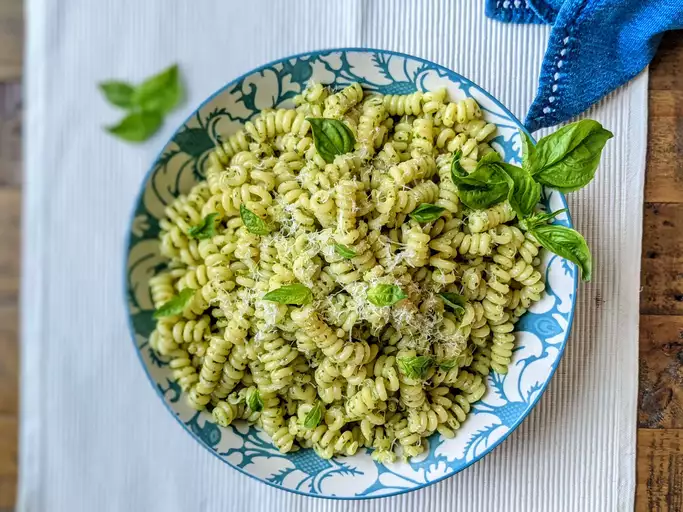

Pesto Pasta Recipe

Description
A Tried and True classic of pasta and sauce will make even the pickiest eater happy. This PestoPasta recipe takes only 15 mins to make and is easy as 1,2,3.
Ingrediants
- 1 (16 ounce) package pasta
- 2 tablespoons of olive oil
- 1/2 Cup of chopped onion
- 2 1/2 tablespoons Pesto
- salt to taste
- ground black pepper to taste
- 2 tablespoons grated parmesan cheese
Steps
- Fill a large pot with lightly salted water and bring to a rolling boil. Stir in pasta and return to a boil. Cook pasta uncovered, stirring occasionally, until tender yet firm to the bite, about 8 to 10 minutes. Drain and transfer into a large bowl.
- Meanwhile, heat oil in a frying pan over medium-low heat. Add onion; cook and stir until softened, about 3 minutes. Stir in pesto, salt, and pepper until warmed through.
- Add pesto mixture to hot pasta; stir in grated cheese and toss well to coat.